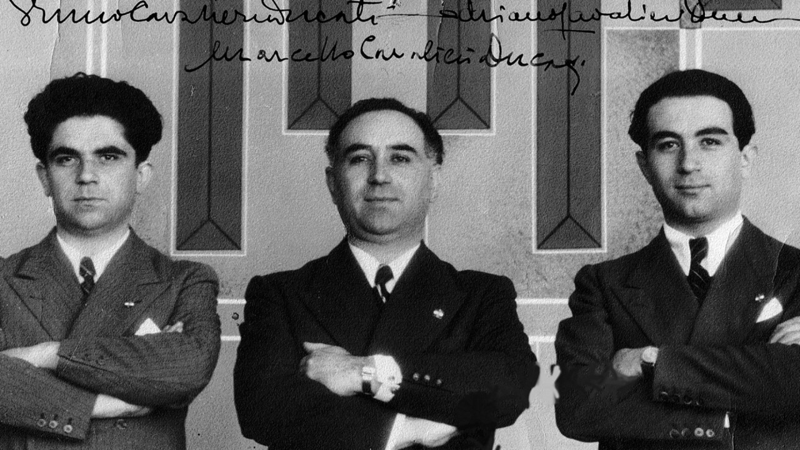

De gebroeders Ducati

De drie kinderen van Antonio Cavalieri Ducati, een ingenieur die tegen het einde van de 19e eeuw succesvol
werd, zijn de hoofdpersonen achter het ontstaan van Ducati. Antonio Cavalieri Ducati, oorspronkelijk afkomstig
uit Comacchio, verhuisde naar Bologna in de tweede helft van de 19e eeuw, op het hoogtepunt van de
industriële
revolutie.
In 1924 werd Adriano Cavalieri Ducati, een briljante natuurkundestudent, beroemd door zijn geslaagde poging om
Italië en de Verenigde Staten via de radio te verbinden met een kortegolfapparaat dat hij zelf had
ontworpen.
Bologna maakte een periode van grote beroering door, met de eerste radio-uitzendingen en vooral de populariteit
die het genoot omdat het de geboorteplaats was van degene die de radio had uitgevonden, Guglielmo Marconi.
Gedreven door het enthousiasme over dit geslaagde experiment richtte de familie Ducati op 4 juli 1926
de “Società Scientifica Radio Brevetti Ducati” op.
Het eerste hoofdkantoor bevond zich in het centrum van de stad, in Via Collegio di Spagna nr. 9, maar al snel
verhuisde het bedrijf naar Viale Guidotti nr. 51, net buiten het centrum. Daar behield het bedrijf zijn eerste
grote fabriek tot 1 juni 1935, toen de eerste steen werd gelegd voor de huidige fabriek in Borgo Panigale.
Het eerste gedeelte werd gebouwd tussen 1935 en 1939. Het hoofd van het project en de locatie was Bruno
Ducati;
Marcello Ducati was op zijn beurt hoofd van het personeel, terwijl Adriano Ducati verantwoordelijk was voor
productie en onderzoek.
Van condensatoren werd het productengamma snel uitgebreid tot radioapparatuur en precisiebewerking, wat leidde
tot een toename van het aantal arbeidskrachten; in de jaren '30 werd Ducati zelfs de belangrijkste
industriële
werkgever in de stad Bologna. Bij het uitbreken van de Tweede Wereldoorlog werd het bedrijf verder uitgebreid
tot meer dan 5.000 werknemers.
Op 12 oktober 1944 werd de fabriek zwaar beschadigd door geallieerde bommenwerpers en de productie werd
stopgezet tot de tweede helft van 1945.
De gebroeders Ducati verloren het vertrouwen niet en reeds eind 1945 werd het bedrijf gedeeltelijk
heropgebouwd, voldoende om in maart 1946 te beginnen met de productie van de Cucciolo, het eerste
motorfietsproduct dat in Borgo werd gemaakt. Helaas konden de gebroeders Ducati vanwege de tijdens de
oorlog opgelopen schade het bedrijf niet meer winstgevend maken en in 1948 werd het bedrijf door de staat
overgenomen.
Adriano Cavalieri Ducati verhuisde naar Californië, waar hij samenwerkte met Werner Von Braun bij het
ruimtevaartprogramma, dat in 1969 de man op de maan bracht. Marcello Ducati begon op zijn beurt een bedrijf in
Milaan voor de productie van automatische poorten. Bruno Ducati tenslotte verhuisde ook naar Milaan om een
bedrijf te beginnen dat tot op de dag van vandaag in onroerend goed handelt.
Op 18 mei 2001 overleed Bruno, de laatste van de Ducati broers, op 96-jarige leeftijd.
De geschiedenis van Ducati
1926
Antonio Cavalieri Ducati en zijn drie zonen, Adriano, Marcello en Bruno, richtten in Bologna de Società
Scientifica Radio Brevetti Ducati op voor de productie van vacuümbuizen, condensatoren en andere
radio-onderdelen.
1935
Zij waren succesvol genoeg geworden om de bouw van een nieuwe fabriek in de wijk Borgo in de stad
mogelijk te maken.
1944
Tijdens de Tweede Wereldoorlog werd de productie gehandhaafd, ondanks het feit dat de Ducati fabriek
herhaaldelijk het doelwit was van geallieerde bombardementen. De fabriek werd uiteindelijk op 12 oktober 1944
vernietigd door ongeveer 40 geconsolideerde B-24 Liberators in het kader van Operatie Pancake van de
Amerikaanse luchtmacht, waarbij ongeveer 700 vliegtuigen van vliegvelden in de provincie Foggia vlogen.
1950
In samenwerking met SIATA bood de firma Ducati zijn eigen op Cucciolo gebaseerde motorfiets aan. Deze eerste
Ducati was een 48 cc motorfiets met een gewicht van 44 kg, een topsnelheid van 64 km/u en een carburateur van
15 mm (0,59 in) die net geen 200 mpg-US (1,2 l/100 km; 240 mpg-imp) opleverde. Ducati liet de naam Cucciolo al
snel vallen ten gunste van “55M” en “65TL”.
1952
Toen de markt verschoof naar grotere motorfietsen, besloot het management van Ducati te reageren en maakte
indruk
op een show in Milaan begin 1952 met de introductie van de 65TS en de Cruiser (een viertakt scooter). Ondanks
dat de Cruiser werd beschreven als de meest interessante nieuwe machine op de show van 1952, was het geen
groot succes en werden er slechts een paar duizend gemaakt over een periode van twee jaar voordat het model de
productie staakte.
1953
De directie splitste het bedrijf in twee afzonderlijke entiteiten, Ducati Meccanica SpA en Ducati
Elettronica, als erkenning van de uiteenlopende productlijnen voor motorfietsen en elektronica. Dr. Giuseppe
Montano nam de leiding van Ducati Meccanica SpA over en de fabriek in Borgo werd met overheidssteun
gemoderniseerd. In 1954 verhoogde Ducati Meccanica SpA de productie tot 120 motoren per dag.
1960's
Ducati verdiende zijn plaats in de motorfietsgeschiedenis door de snelste 250 cc wegmotor te produceren die
toen verkrijgbaar was, de Mach 1.
1970's
Ducati begon motorfietsen te produceren met V-twin motoren met een grote cilinderinhoud, die Ducati aanduidde
als “L-twin” vanwege hun hoek van 90°, en in 1973 introduceerde Ducati het desmodromische kleppenontwerp, dat
als handelsmerk had.
1985
Cagiva kocht Ducati en was van plan de Ducati motorfietsen te voorzien van de naam “Cagiva”. Toen de aankoop
was afgerond, behield Cagiva de naam “Ducati” op haar motorfietsen.
1996
Cagiva aanvaardde het bod van Texas Pacific Group en verkocht een belang van 51% in het bedrijf voor US$325
miljoen.
1998
Texas Pacific Group kocht het grootste deel van de resterende 49% om de enige eigenaar van Ducati te worden.
1999
TPG geeft een eerste openbare emissie van Ducati-aandelen uit en hernoemt het bedrijf tot “Ducati Motor
Holding SpA”. TPG verkocht meer dan 65% van zijn aandelen in Ducati, waardoor TPG de meerderheidsaandeelhouder
werd.
2005
Ducati komt weer in Italiaanse handen door de verkoop van het belang van Texas Pacific (min één aandeel) aan
Investindustrial Holdings, het investeringsfonds van Carlo en Andrea Bonomi.
2012
De Audi-dochteronderneming van het Volkswagen-concern kondigde aan Ducati te willen kopen voor 860 miljoen
euro. Volkswagen-voorzitter Ferdinand Piëch, een motorliefhebber, verlangde al lang naar Ducati en had er
spijt van dat hij de kans om het bedrijf in 1984 van de Italiaanse regering te kopen had laten lopen.
Analisten betwijfelden of een kleine motorfietsfabrikant een betekenisvol effect zou hebben op een bedrijf van
de omvang van Volkswagen en merkten op dat de overname “een trofee-gevoel oproept” en “eerder wordt ingegeven
door VW's passie voor merknamen dan door industriële of financiële logica”. Het Italiaanse luxemerk
Lamborghini werd versterkt onder VW-eigendom. De dochteronderneming Automobili Lamborghini S.p.A. van
AUDI AG verwierf op 19 juli 2012 100 procent van de aandelen van Ducati Motor Holding S.p.A. voor 747 miljoen
euro.